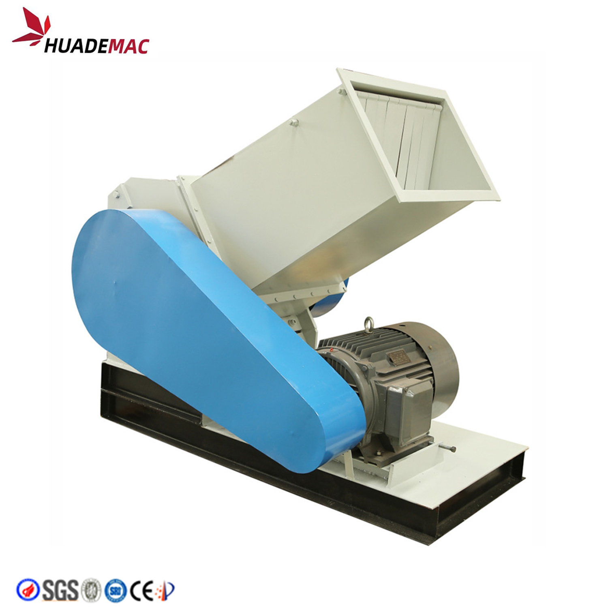
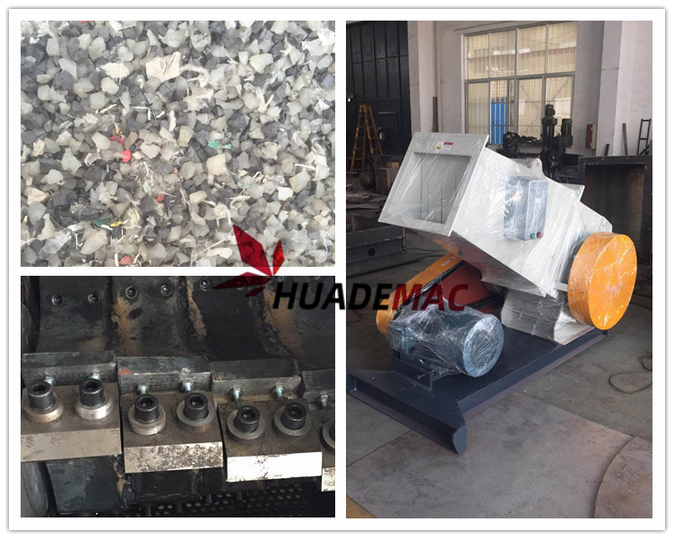

PVC PPR PE Plastic Pipe Crusher
Size-reduce pipe offcuts and profile scrap for recycling.
Inquire about this product Prepare a detailed project brief
Equipment overview
This crusher is mainly used in-cutting of PVC profile and small pipe and others
Use high-intensity steel screws to fasten the knife leaf and knife seat, having strong bearing capacity. All walls of crushing chamber are treated by sound-proof, so having extra-low noise. A discount-type designed, the bunker, main body, screen can be dismounted for cleaning easily. The electric motor has over-loading protection with power source interlock protection device. Double-safety protection for operators and electric motor. Step-type motion knife design with strong breaking capacity.
Technical specifications
Reference configurations from the product catalogue. Confirm output, dimensions and equipment selection for your material and project.
| Model | SWP300 | SWP400 | SWP500 | SWP600 | SWP800 |
|---|---|---|---|---|---|
| Rotary Knife Diameter(mm) | 400 | 400 | 500 | 600 | 800 |
| Rotary Knife Quantity (unit) | 3 | 5 | 5 | 10units/2groups | 10units/2groups |
| Rotary Knife rpm(r/min) | 600 | 500 | 500 | 480 | 500 |
| Static Knife Quantity(unit) | 2 | 2 | 2 | 2x2 | 2x2 |
| Sieve Aperture(mm) | φ10 | φ12 | φ12 | φ12orφ14 | φ12orφ14 |
| Crushing Capacity(kg/h) | 150-200 | 300--400 | 400-500 | 500-600 | 660-700 |
| Power(kw) | 11 | 15 | 18-22 | 22 | 37 |
| Feed Door Caliber(mm | 300x200 | 350x300 | 400x380 | 450x420 | 500X550 |
| Weight(kg) | 950 | 1300 | 1500 | 1800 |
Detailed Images
Application
We are specialized manufacturers from China, Reconditioned Plastic Machines, plastic crusher and shredder Mixers suppliers/factory, wholesale high-quality products of crusher and shredder R & D and manufacturing, we have the perfect after-sales service and technical support. Look forward to your cooperation!

Equipment video
Ask about this machine
PVC PPR PE Plastic Pipe Crusher